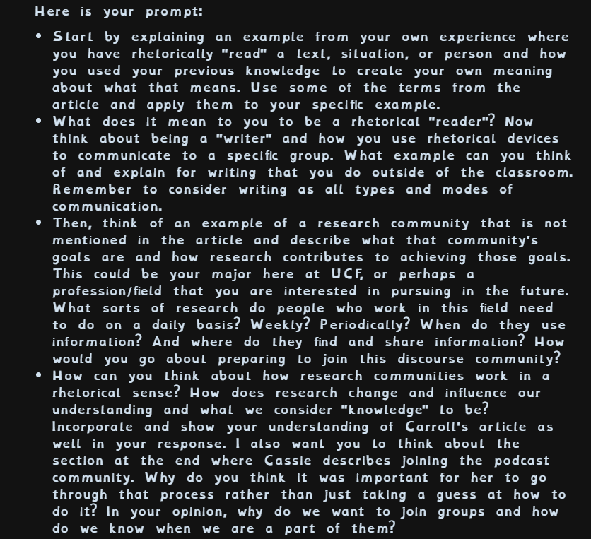
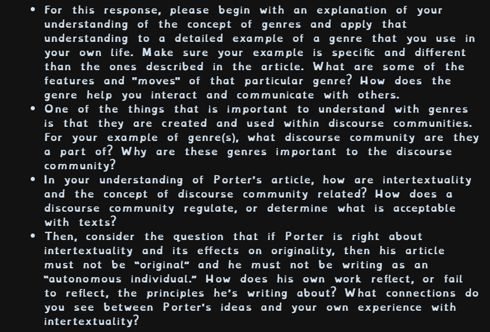

Multiple ways of Writing is one of the cooler SLO we work with in english 2,
Multimodality is super interesting to me as a person who has dyslexia.
I always hated the word literacy because generaly it involves alphabetic text which
I am not very good at understanding. But when I got into collage I got to realize that
Souly alphabetic text is only a small percent of what literature is, and as a result
when given the choice to make something using text or by other modes, in the case for my
reading responces auditory, I will generaly take the latter.
To your right is a recording of me answering questions given to me by my instructor
these questions all relate to the articles we had recently read that was to help us
understand how to do things like rhetoricaly reading to research communitys for this
reading responce spicifically.

For the second reading responce I had to talk about my understanding of Genre
as well as intertextuality, once again using a recording instead of my other
option being a text baised responce. This was as you can read above my second recording
for a reading responce and so it was slightly imporved appon compared to my prevous
attempt. I was also more interested in making an audio based responce because
I have some backgound in video and audio editing back when I was younger making
youtube video so I have some good equipment that was fun to bring out again.
Multimodality is something I think is a very cool thing that we learned in both
english 1 and english 2, not only is it a way to convey information in a better way,
but it is also more fun than just alphabetic text. I like being able to stretch what
literature means to a genre that I genuinely enjoy, whether that is an audio recording
or making a video like I did in english 1.
